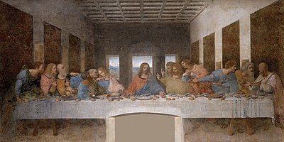

| Espíritu Santo |
Hechos 2:1-4 "Cuando llegó el día de Pentecostés, estaban todos juntos en el mismo lugar. De
repente, vino del cielo un ruido como el de una violenta ráfaga de viento y llenó toda la casa donde
estaban reunidos. Se les aparecieron entonces unas lenguas como de fuego que se repartieron y se
posaron sobre cada uno de ellos. Todos fueron llenos del Espíritu Santo y comenzaron a hablar en
diferentes lenguas, según el Espíritu les concedía expresarse" |
|
| Apóstoles |
Son los hombres escogidos por Jesús de Nazaret para que fueran «pescadores de hombres», es decir,
para multiplicar su presencia y propagar su mensaje. En esta dispensación recibieron el bautismo del
Espíritu Santo y predicaron por las naciones a pesar de ser perseguidos y muchos de ellos
encarcelados y torturados |
 |
| Simón Pedro |
Uno de los discípulos más destacados y cercanos de Jesús de Nazaret. Fue pescador de oficio en el
mar de Galilea y en esta dispensación principalmente fue encargado de la predicación a los judíos
|
|
| Pablo de Tarso |
Es llamado el «Apóstol de los gentiles», el «Apóstol de las naciones». Fundador de comunidades
cristianas, evangelizador en varios de los más importantes centros urbanos del Imperio romano tales
como Antioquía, Corinto, Éfeso y Roma, y redactor de algunos de los primeros escritos canónicos
cristianos —incluyendo el más antiguo conocido, la Primera epístola a los tesalonicenses—, Pablo
constituye una personalidad de primer orden del cristianismo primitivo, y una de las figuras más
influyentes en toda la historia del cristianismo. |
|
| Juan |
Autodenominado como el discípulo amado de Jesús, fue uno de los más cercanos y estuvo con Jesús
incluso en su crucifixión y muerte. Escribió varias cartas del nuevo testamento y e fue revelado el
Apocalipsis es considerado como uno de los pilares de la iglesia primitiva |
|
| Arrebatamiento |
1 Tesalonisenses 4:17 "Luego nosotros los que vivimos, los que hayamos quedado, seremos arrebatados
juntamente con ellos en las nubes para recibir al Señor en el aire, y así estaremos siempre con el
Señor. " |
|
| Iglesia |
1 Corintios 12:12-13 "De hecho, aunque el cuerpo es uno solo, tiene muchos miembros, y todos los
miembros, no obstante ser muchos, forman un solo cuerpo. Así sucede con Cristo. 13 Todos fuimos
bautizados por[a] un solo Espíritu para constituir un solo cuerpo —ya seamos judíos o gentiles,
esclavos o libres—, y a todos se nos dio a beber de un mismo Espíritu" |
|
| Jesús |
1 Tesalonicenses 4:16 "El Señor mismo descenderá del cielo con voz de mando, con voz de arcángel y
con trompeta de Dios, y los muertos en Cristo resucitarán primero" |
|